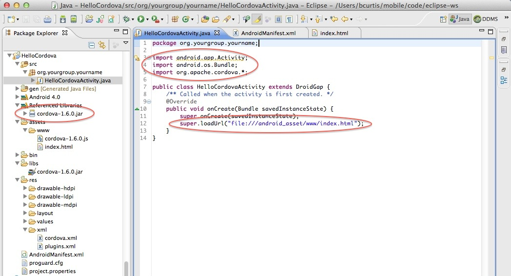

Getting Started with Android
このガイドは、 Cordova のための開発環境セットアップ方法、またシンプルなアプリの動かし方を解説します。 Cordova は以前は PhoneGap と呼ばれていたため、いくつかのサイトは PhoneGap という名前をまだ使用しています。
1. 必要なもの
- Eclipse 3.4以上
2. SDK と Cordova のインストール
- Eclipse Classic のダウンロードとインストール
- Android SDK のダウンロードとインストール
- ADT Plugin のダウンロードとインストール
- Cordova の最新版をダウンロードし解凍します。これから Android ディレクトリと一緒に作業を進めます。
3. 新規プロジェクトの作成
- Eclipse を起動し、メニューから 新規プロジェクト を選択します

- 新しいアプリケーションプロジェクトを指定します
- アプリケーション名、プロジェクト名、ネームスペースを伴ったパッケージ名を指定します
- ランチャーアイコンの設定をします
- Blank Activity を作成します
Activity が何も継承していないことを確認して下さい。 PhoneGap が Eclipse のワークスペースに無いような状態です。これが終わったら、 Finish をクリックします
-
作成したプロジェクトのルートディレクトリに、以下の2つの新しいディレクトリを作成します:
- /libs
- assets/www
- ダウンロードした Cordova から cordova-2.0.0.js を assets/www にコピーしてください。
- ダウンロードした Cordova から cordova-2.0.0.jar を /libs にコピーしてください。
ダウンロードした Cordova から xml フォルダーを /res にコピーしてください。
-
cordova-2.0.0.jar がプロジェクトのビルドパスに追加されていることを確認してください。 /libs フォルダーを右クリックし、 ビルド・パス > ビルド・パスの構成 を選択します。ライブラリータブで、 cordova-2.0.0.jar をプロジェクトに追加します。もしうまくいかない場合は、 F5 キーを押してプロジェクトをリフレッシュする必要があるかもしれません。
-
作成したプロジェクトの src フォルダーにあるメインの Java ファイルを編集します:
- import org.apache.cordova.*; を追加
- クラスの継承元を Activity から DroidGap に変更
- setContentView() の行を super.loadUrl("file:///android_asset/www/index.html"); に置き換え

AndroidManifest.xml を右クリックし、 アプリケーションから開く > テキスト・エディター を選択します
-
以下のコードを、 <uses-sdk.../> と <application.../> タグの間に貼り付けてください。
<supports-screens android:largeScreens="true" android:normalScreens="true" android:smallScreens="true" android:resizeable="true" android:anyDensity="true" /> <uses-permission android:name="android.permission.VIBRATE" /> <uses-permission android:name="android.permission.ACCESS_COARSE_LOCATION" /> <uses-permission android:name="android.permission.ACCESS_FINE_LOCATION" /> <uses-permission android:name="android.permission.ACCESS_LOCATION_EXTRA_COMMANDS" /> <uses-permission android:name="android.permission.READ_PHONE_STATE" /> <uses-permission android:name="android.permission.INTERNET" /> <uses-permission android:name="android.permission.RECEIVE_SMS" /> <uses-permission android:name="android.permission.RECORD_AUDIO" /> <uses-permission android:name="android.permission.MODIFY_AUDIO_SETTINGS" /> <uses-permission android:name="android.permission.READ_CONTACTS" /> <uses-permission android:name="android.permission.WRITE_CONTACTS" /> <uses-permission android:name="android.permission.WRITE_EXTERNAL_STORAGE" /> <uses-permission android:name="android.permission.ACCESS_NETWORK_STATE" /> <uses-permission android:name="android.permission.GET_ACCOUNTS" /> <uses-permission android:name="android.permission.BROADCAST_STICKY" />*これにより、パーミッションの包括的なリストを追加していることに注意してください。 Google Play にアプリケーションを提出する前に、使用していないパーミッションは削除してください。
-
画面の回転をサポートするために、以下を <activity> タグの中に貼り付けてください。
android:configChanges="orientation|keyboardHidden|keyboard|screenSize|locale" -
AndroidManifest.xml は以下のようになります。
4. Hello World の作成
-
index.html という名前のファイルを assets/www ディレクトリに新規作成します。 以下のコードを貼り付けます:
<!DOCTYPE HTML> <html> <head> <title>Cordova</title> <script type="text/javascript" charset="utf-8" src="cordova-2.0.0.js"></script> </head> <body> <h1>Hello World</h1> </body> </html>
5A. シミュレーターへのデプロイ
- プロジェクトを右クリックし、次を 実行 > Android Application を選択
- 適切な AVD を選択。 もしない場合は、作成する必要があります
5B. デバイスへのデプロイ
- デバイスの設定で USB デバッグが有効になっていること、またコンピュータに接続されていることを確認 (設定 > アプリケーション > 開発)
- プロジェクトを右クリックし、次を 実行 > Android Application を選択